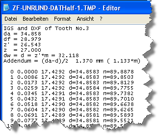

|
|
|


导出单个齿
打开一个保存的 .Z40 文件，查找包含
ZRnc[0].AusgabeKontur=0，用于齿轮 1，或
ZRnc[1].AusgabeKontur=0，用于齿轮 2。
在那里，将变量更改为所需值，例如 ZRnc[0].AusgabeKontur=3。
始终导出第 x 个齿槽的左齿面（因此在示例中，即齿轮 1 的第 3 个齿槽）。

图21.9：导出齿的临时文件（ZRnc[0].AusgabeKontur=3，齿轮 1）
Exporting individual teeth
Go to a saved .Z40 file and search for the line that contains
ZRnc[0].AusgabeKontur=0, for Gear 1 or
ZRnc[1].AusgabeKontur=0, for Gear 2.
There, change the variable to the required value, e.g. ZRnc[0].AusgabeKontur=3.
The LEFT flank of the x-th tooth space (therefore the 3rd gap in Gear 1, in the example) is always exported.
Figure 21.9: Temporary file for exporting teeth (ZRnc[0].AusgabeKontur=3, for Gear 1)